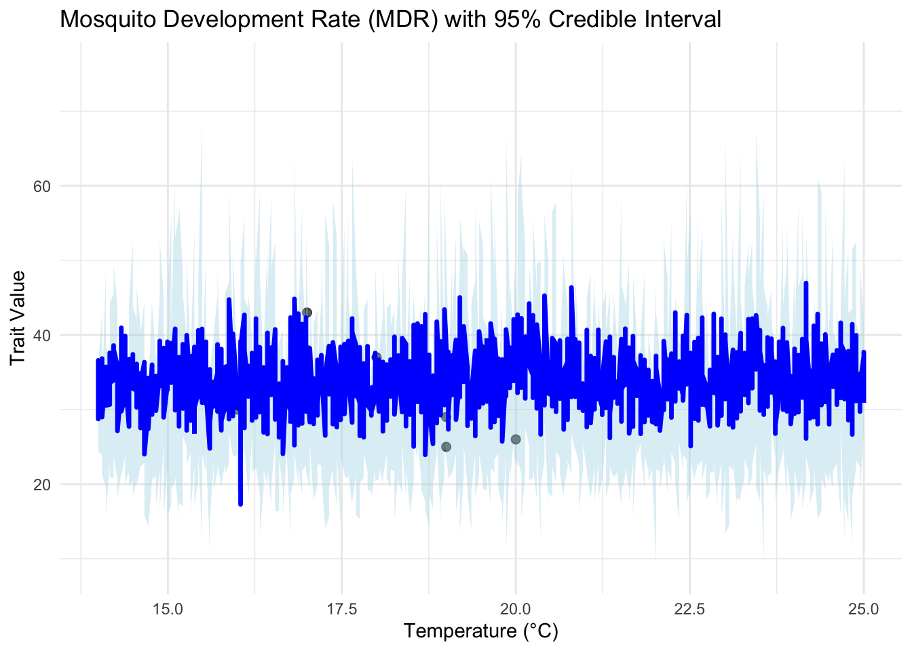

library(tidyverse)── Attaching core tidyverse packages ──────────────────────── tidyverse 2.0.0 ──
✔ dplyr 1.1.4 ✔ readr 2.1.5
✔ forcats 1.0.0 ✔ stringr 1.5.1
✔ ggplot2 3.5.1 ✔ tibble 3.2.1
✔ lubridate 1.9.4 ✔ tidyr 1.3.1
✔ purrr 1.0.2
── Conflicts ────────────────────────────────────────── tidyverse_conflicts() ──
✖ dplyr::filter() masks stats::filter()
✖ dplyr::lag() masks stats::lag()
ℹ Use the conflicted package (<http://conflicted.r-lib.org/>) to force all conflicts to become errorslibrary(readxl)
library(here)here() starts at /Users/yusiyao/Desktop/VT/STAT_4664_Stochastic/finallibrary(rjags)Loading required package: coda
Linked to JAGS 4.3.2
Loaded modules: basemod,bugslibrary(coda)
# Load and prepare the data
trait_data <- read_excel(here("data", "the_one_we_need.xlsx"))
df <- trait_data %>%
select(T = Interactor1Temp, trait = OriginalTraitValue) %>%
drop_na()
# JAGS model (same as before)
briere_model <- "
model {
for (i in 1:N) {
trait[i] ~ dnorm(mu[i], tau)
mu[i] <- c * T[i] * (T[i] - T0) * sqrt(Tm - T[i])
}
c ~ dgamma(1, 10)
T0 ~ dunif(0, 24)
Tm ~ dunif(25, 45)
sigma ~ dunif(0, 10)
tau <- pow(sigma, -2)
}
"
# Prepare data for JAGS
jags_data <- list(
T = df$T,
trait = df$trait,
N = nrow(df)
)
inits <- function() {
list(c = runif(1, 0, 1), T0 = runif(1, 0, 20), Tm = runif(1, 25, 45), sigma = runif(1, 0, 1))
}
params <- c("c", "T0", "Tm", "sigma")
model <- jags.model(textConnection(briere_model), data = jags_data, inits = inits, n.chains = 3)Compiling model graph
Resolving undeclared variables
Allocating nodes
Graph information:
Observed stochastic nodes: 8
Unobserved stochastic nodes: 4
Total graph size: 50
Initializing modelupdate(model, 1000)
samples <- coda.samples(model, variable.names = params, n.iter = 5000)
# Extract MCMC draws
samples_df <- as.data.frame(do.call(rbind, samples))
# Temperature sequence
temp_seq <- seq(min(df$T) - 2, max(df$T) + 5, length.out = 200)
# Calculate predicted values from posterior draws
pred_matrix <- apply(samples_df[sample(1:nrow(samples_df), 1000), c("c", "T0", "Tm")], 1, function(pars) {
c_val <- pars[1]
T0_val <- pars[2]
Tm_val <- pars[3]
ifelse(
temp_seq > T0_val & temp_seq < Tm_val,
c_val * temp_seq * (temp_seq - T0_val) * sqrt(pmax(Tm_val - temp_seq, 0)),
0
)
})
# Transpose so each row = temp, each column = sample
pred_matrix <- t(pred_matrix)
# Summarize by quantiles
pred_df <- data.frame(
temp = temp_seq,
mean = apply(pred_matrix, 1, mean),
lower = apply(pred_matrix, 1, quantile, 0.025),
upper = apply(pred_matrix, 1, quantile, 0.975)
)
ggplot(df, aes(x = T, y = trait)) +
geom_point(size = 2, alpha = 0.7) +
geom_ribbon(data = pred_df, aes(x = temp, ymin = lower, ymax = upper),
inherit.aes = FALSE, fill = "lightblue", alpha = 0.4) +
geom_line(data = pred_df, aes(x = temp, y = mean),
inherit.aes = FALSE, color = "blue", linewidth = 1.2) +
labs(
title = "Mosquito Development Rate (MDR) with 95% Credible Interval",
x = "Temperature (°C)",
y = "Trait Value"
) +
theme_minimal()